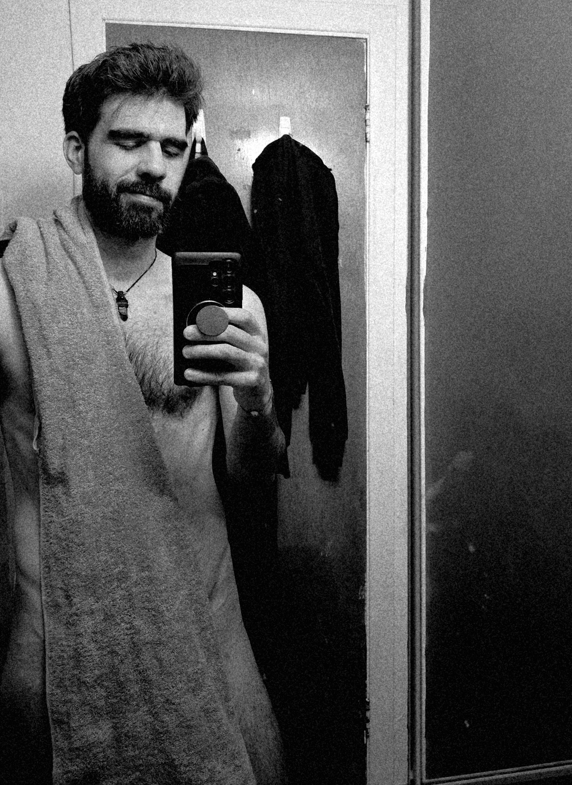

Es evidente que nos queremos de vuelta,
y nos queremos bien.
Pero la opción siempre debe darse
porque somos personas cordiales.
Te daré la opción, y la puedes pensar bien.
Comenzando este nuevo comienzo,
¿me quieres sin censura? ¿O moderado?
Lo más importante para mí es que estemos bien,
a la distancia que sea.
Y si hay que modificar cosas
para que haya estabilidad, que así sea.
Y si estás leyendo esto
después de contestar la otra...
que tramposita 😉
pero el mensaje aplica igual.
Me es imposible no verte en todos lados
después de lo que viví contigo.
Me encanta.
Y después de todo este tiempo me gusta
que me sigue dando nervios coquetearte
como cuando te dije Vampirita.
¿Te gusta ser mi vampirita?
Mentirosa.

I've missed you